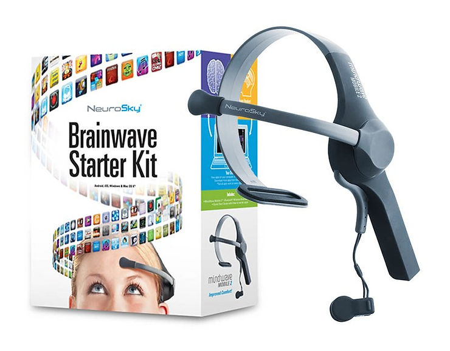
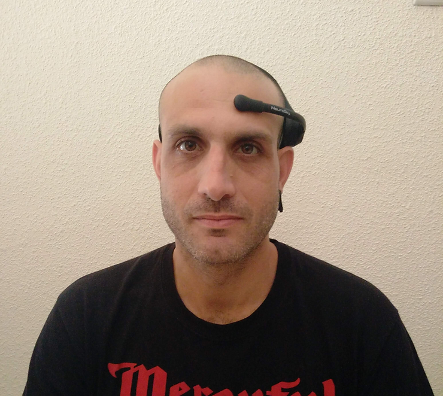

NeuroSky MindWave Mobile 2
קניתי לפני כמה ימים NeuroSky MindWave Mobile 2 והיום קיבלתי אותו.

הרבה מאוד זמן רציתי מכשיר מהסוג הזה, יש לי הרבה רעיונות מה לעשות איתו.
בגדול, הוא קולט את המידע באמצעות אלקטרודה בודדת ומחזיר את המידע הבא:
8 גלי מוח - Delta, Theta, Low Alpha, High Alpha, Low Beta, High Beta, Low Gamma and Mid Gamma
2 ערכים נוספים - ריכוז ומדיטציה, אני מניח שהם ניתוח כלשהו של ה-raw data שמגיע מ-8 הגלים שהוזכרו.
ערכים נוספים - עוצמת מצמוץ העיניים, אות חלש וערך נוסף.
ניסיתי אותו בינתיים על הסמארטפון שלי (OnePlus X). מתחבר דרך bluetooth.
יש את האפליקציה הזאת: https://play.google.com/store/apps/details?id=com.neurosky.unitythinkgear
גרפיקה מדהימה בה מוצגים הערכים בצורת גרפים שונים וצבעוניים.
אהבתי והתקנתי גם את: https://play.google.com/store/apps/details?id=com.pwittchen.eeganalyzer
אין תוכנה מותאמת ללינוקס שמגיעה עם המכשיר (המחשב האישי שלי הוא לינוקס מנטה 19) - לכן אחפש ואתקין תוכנות שנכתבו לסביבה כזאת. בכל מקרה, אחת המטרות שלי היא להתממשק למכשיר באמצעות ה-PC, ה-RPi ו-Arduino. ל-RPi חסר לי כרגע דונגל בלוטות' ול-Arduino חסר כרטיס בלוטות' מסוג HC-05 (אולי יש משהו אחר).
ניסיון על הלינוקס מינט
ה-Headset על הראש שלי, דלוק ובמצב pairing (קוד 0000).

ניסיתי להתחבר למכשיר באמצעות תוכנת ה-Bluetooth הדיפולטיבית של מינט (Blueberry) ללא הצלחה, נתקלתי באותו עניין כשניסיתי בעבר להתחבר לאוזניות JBL.
התקנתי את Blueman ונכנסתי לתוכנה. נפתח חלון GUI ולצד מכשירים אחרים, הופיע בו גם ה-MindWave Mobile. לחצתי על setup ובחרתי להתחבר ל-Serial Port. התחברתי והמכשיר כעת זמין ב-/dev/rfcomm2
בהמשך, עשיתי dump לדאטא שמתקבל ב-rfcomm2, כתבתי:
cat /dev/rfcomm2 | hexdump -C
נראה טוב !
בריצה אחרת שהרצתי, ה-dump הפסיק לאחר כמה זמן. אני לא בטוח אם המידע בסרטון זה המידע שהיה קיים כבר בקובץ rfcomm2, שהספיק להתאסף שם עד שהרצתי את הפקודה. אם הייתי מחכה מספיק, הריצה היתה נעצרת. או שזה לא אמור לקרות משום שמידע מגיע באופן רציף ומה שקרה שה-rfcomm2 קיבל EOF.
הערה קטנה: בשלב הבא, ה-dev השתנה ל-rfcomm0. הפקודות זהות, בכל מקרה.
בכל מקרה, אם רוצים לראות את המצב הנוכחי בצורה המשכית, גם אם מקבלים EOF - משתמשים ב:
tail -f
והשורה המלאה:
tail -f /dev/rfcomm0 | hexdump -C
הדבר הבא שעשיתי היה לחפש קוד ללינוקס. החברה NeuroSky שחררה באופן רשמי SDK רק לווינדוס, מק ואנדרואיד.
מצאתי את: https://pypi.org/project/NeuroPy/
התקנה פשוטה:
pip install NeuroPy
וקוד בסיסי, לעת עתה:
* עוד הזדמנות להיכנס עמוק יותר לפייתון
אם יש לי את שני הנתונים האלה, בינתיים, באופן רציף. למה שלא אשתמש בהם ל-Polargraph שבניתי לא מזמן. אני פותח לזה פוסט נפרד.
* הערה: אני חווה המון ניתוקים של ה-MindWave מה-rfcomm וצריך פעם בחצי דקה, פחות או יותר, להתחבר מחדש (Blueman). החיבור מחדש לא תמיד מצליח ואם כן, אני מקבל rfcomm חדש (rfcomm1, rfcomm2 וכו'). אז קודם כל, בלי קשר, אוסיף לקוד אפשרות לקבל כ-cli arguments את ה-serial dev, את ה-baud rate שלו ואת ה-MindWave dev.
דבר שני, כשהתחלתי לעבוד עם הקוד של ה-NeuroPy, ראיתי שיש אפשרות לקבל את המידע (attention, meditation וכו') בצורה של callback בניגוד ללדגום בלולאה אינסופית עם טיימר וכולי - כמו שעשיתי. ניסיתי בהתחלה את ה-callback ולא ראיתי מידע מופיע על המסך. לכן השתמשתי בדרך השנייה. אנסה שוב.
עדכון 19/7/19
- נסיתי callbacks בדיוק כמו בדוגמא ב-NeuroPy, לא עובד.
- ניתוקים - אני חייב לפחות למצוא דרך לאתחל את ה-bluetooth. ניסיתי:
systemctl restart bluetooth
וכשאני עושה pairing, אין תגובה. לפעמים גם ריסטרט של המחשב לא עוזר. לא יציב כרגע כל העניין.
- אני לא בטוח מה הבעיה אבל כשאקנה דונגל בלוטות' ל-RPi, אנסה אותו גם על הלפטופ. נראה.
עדכון 20/7/19
- לא נעים להגיד אבל 'בעיית' הניתוקים היתה בעצם סוללת AAA ריקה ב-headset.
מספר פרויקטים בהם השתמשתי במכשיר:
MindWave Mobile 2 + SuperCollider
MindWave Mobile 2 + Polargraph
תכנונים להמשך:
דרך נוספת להתחבר למכשיר - דרך הטרמינל:
hcitool scan
sudo rfcomm connect 0 [bdaddr]